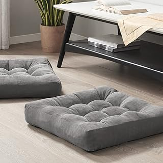

At the heart of the Willowbloom Nook Organizer's appeal lies its meticulously considered design. The delicate floral embroidery, rendered with an artisanal touch, evokes a sense of timeless elegance, reminiscent of heirloom linens. This intricate detailing is beautifully complemented by vintage-inspired ruffles, which add a soft, romantic dimension without appearing ostentatious. The overall aesthetic speaks to a refined grandmillennial taste, where comfort and nostalgia are celebrated through carefully chosen pieces. It’s an object that doesn't demand attention but rather invites closer inspection, revealing its charming complexities and the narrative of craftsmanship embedded within its very fabric.
Beyond its undeniable visual charm, the Willowbloom Nook Organizer demonstrates a practical understanding of a reader's needs. Crafted from what appears to be a durable yet soft textile, the construction ensures both longevity and a pleasant tactile experience. Its structured yet yielding compartments are intuitively designed to cradle a novel, secure reading glasses, and accommodate a teacup, preventing spills and maintaining order. This thoughtful configuration ensures essential items remain within effortless reach, transforming a potentially cluttered area into a serene, organized retreat. The quality of stitching and material indicates a product designed for enduring appeal and daily utility, rather than fleeting trend.
The Willowbloom Nook Organizer offers a charming, aesthetically refined solution for keeping reading essentials close at hand. It thoughtfully complements spaces embracing a grandmillennial or vintage-inspired decor, providing both beauty and discreet utility.
View Current Price| Material | Premium Embroidered Fabric |
| Key Feature | Dedicated Compartments for Reading Essentials |
| Aesthetic Style | Grandmillennial, Romantic Vintage |